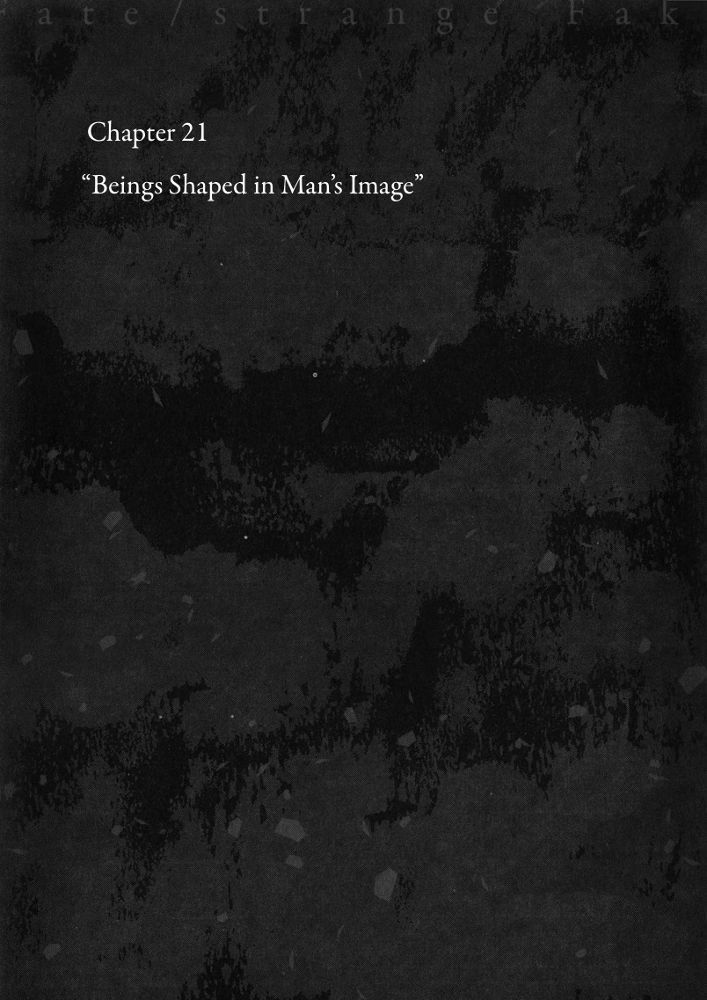
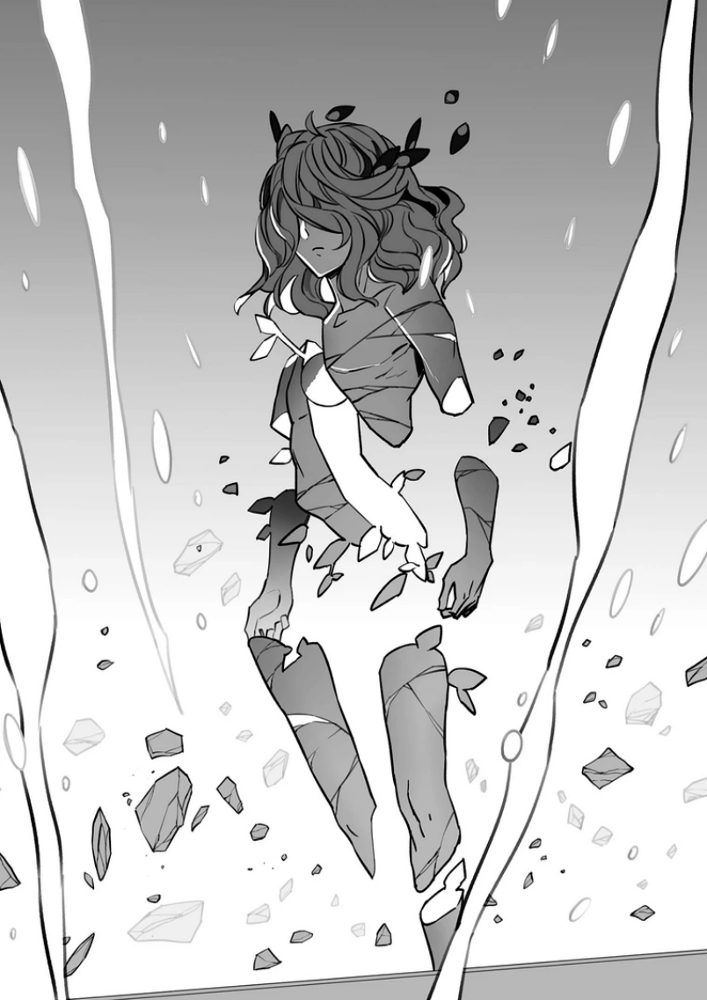
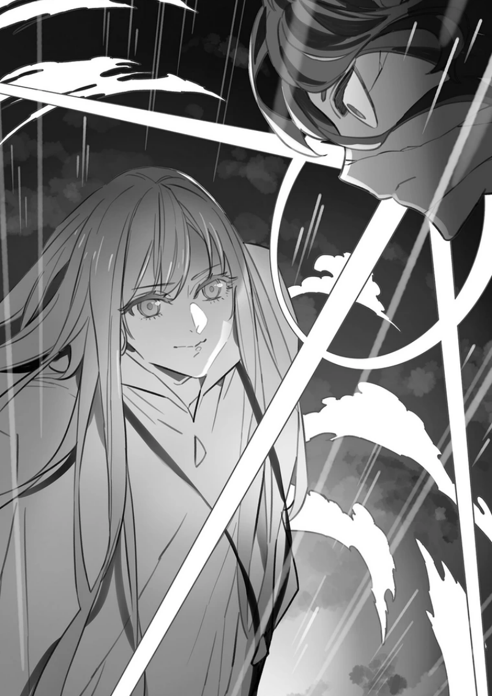

Aqueles que viram a criatura ou souberam de sua existência ao detectar sua Energia Mágica reagiram de várias maneiras diferentes.
Mesmo assim, embora alguns a considerassem um problema que poderia ser deixado para depois, nenhum deles conseguiu ignorá-la por completo.
Todos perceberam que algo "extrínseco" havia sido trazido àquela terra.
Algo de rank equivalente ao de um Espírito Heroico se manifestara.
A equipe mais próxima no momento de seu nascimento era Saber, Ricardo Coração de Leão, e sua mestra, Ayaka.
"A-aaaaah... Não... NÃO..."
Diante da brutalidade que acabara de presenciar, Ayaka caiu de joelhos, cobrindo os olhos para não precisar olhar para a cabeça destroçada do cadáver do jovem.
"..."
Enquanto Ayaka gritava, rejeitando aquela realidade, outra emoção brotou em seu peito.
Aconteceu de novo. Alguém morreu porque eu fiquei parada, sem fazer nada. De novo.
Ela sentiu uma emoção parecida com resignação, e o nervosismo e o medo que surgiram para escondê-la.
Confrontada com o fato de que o homem que acabara de conhecer morrera de repente diante de seus olhos, ela foi assaltada por várias emoções ao mesmo tempo. Tantas que outra versão de si mesma apareceu como uma reação mental de defesa, tentando obrigá-la a se acalmar.
Me diga, por que ele foi morto?
Parecia me conhecer... Mas eu não o conheço.
Não seria porque eu sou uma mestra?
Então quer dizer que ele também é um mestre? Foi por isso que o mataram?
Nesse caso, quem é o próximo alvo?
"...!"
Tendo entendido a situação de imediato, Ayaka ergueu a cabeça e tentou se levantar.
Ela ainda estava em choque e não conseguia pôr força nas pernas. O tremor em sua espinha consumia todas as outras sensações.
Quando percebeu, Saber já a estava abraçando.
Ele a carregou direto até um prédio próximo. Lá dentro, tornou a colocá-la no chão, num ponto que não seria visível de nenhum dos edifícios ao redor.
"Ayaka. Você está bem?"
"...!"
Isso mesmo. Agora não é hora de tremer.
"Sim, obrigada."
O que conteve seu tremor foi a lembrança do contrato que ela formalizara com Saber.
- "Responda. Você é minha Mestre?"
Ela respondera à pergunta de Saber.
Não com uma resposta formal, nem com algo engenhoso.
Apenas com um aceno de cabeça.
Ela simplesmente moveu o queixo para baixo. Nenhum gesto poderia ter sido mais simples. E, ainda assim, a quantidade de determinação contida naquele gesto o fazia parecer a primeira vez em sua vida, ao menos desde onde alcançavam suas lembranças, em que ela de fato tomara uma atitude.
Tornar-me uma mestra foi um caminho que escolhi por vontade própria.
Com essa confirmação renovada, ela recuperou a determinação que tivera no instante de sua escolha.
Seu tremor cessou, e o grito prestes a explodir afundou de volta às profundezas de sua garganta.
Ela ainda não tinha uma ideia clara de como era a relação entre um mestre e um servo, mas sabia que já não podia se dar ao luxo de lamentar-se dizendo que era uma estranha arrastada para o conflito.
Entendera que, acontecesse o que acontecesse, não seria capaz de escapar da espiral do destino.
Seria pressionada a fazer uma escolha, quisesse ou não. Sua vida estava sendo visada por alguém com quem não podia dialogar.
Mas ela não estava sozinha.
Se se deixasse esmagar sem lutar, Saber viraria pó.
Não posso deixar isso acontecer. Ainda não retribuí nada do que devo a esse Rei... Não, não se trata de dever nada a ele. Estou fazendo o que quero porque quero fazer.
Ela fora atirada a uma batalha em que a vida estava em jogo quando ainda não conseguia encontrar uma resposta concreta para a pergunta "por que estou viva?".
Se quisesse superar seus tormentos, se quisesse caminhar lado a lado com Saber, esse intrometido despreocupado que era tão diferente dela, não podia sair correndo aos gritos.
Seu corpo inteiro voltou a ganhar força à medida que o sangue tornava a circular e suas sensações retornavam.
Ela não sabia se esse alvoroço por todo o corpo era aquela tal "Energia Mágica" de que tanto ouvira falar ou apenas pura valentia vazia.
Além disso... não é a primeira vez que alguém que eu conheço morre diante dos meus olhos...
Depois desse pensamento autodepreciativo fora de hora, a confusão a atingiu.
Espera...? Quem foi que morreu da primeira vez mesmo...? Não, agora não é hora de pensar nisso.
Um tumulto tomou forma no coração de Ayaka, mas ela não lhe deu atenção suficiente para permitir que a impedisse de ficar de pé.
E então avaliou sua situação para planejar o próximo passo.
"..."
Uma tragédia ocorrera há menos de um minuto. Os flashes da cor e do cheiro do sangue a deixavam nauseada, mas ela os reprimiu e perguntou a Saber sobre a situação.
"O que aconteceu?"
"Um ataque de atiradores. Estamos cercados por vários snipers. Balas normais não funcionam contra nós, Espíritos Heroicos, então o alvo deles serão os mestres."
"Hã? Quer dizer... aquilo não foi um ataque de Espírito Heroico? Foram só armas de fogo?"
Ayaka engoliu em seco e passou os olhos pelos arredores.
Não achava que encontraria os agressores, muito menos os snipers, mas não podia deixar de verificar.
"O rapaz que falou comigo..."
A Guerra do Santo Graal era um banho de sangue sem regras. Ela conseguia acreditar que inimigos atacassem à luz do dia, num distrito densamente povoado.
Saber já lhe falara sobre o princípio do sigilo arcano, mas o próprio Saber dando entrevista para a TV não fazia parecer que essa regra era levada muito a sério. A intensidade da batalha diante do hospital lhe dizia tudo o que precisava saber sobre a segurança das pessoas comuns naquela cidade.
"Entendi... Se matarem pessoas com armas normais, isso nem encosta naquele negócio de sigilo arcano."
"Essa é a lógica. Deve haver precedentes assim em Guerras do Santo Graal anteriores. Bem, qualquer mago que priorize eficiência pensaria dessa forma. E é por isso que você precisa de um Servo."
Ela sabia, por causa de Sigma e do grupo que vigiava a mansão no pântano, que a cidade estava infestada de mercenários armados. Em qualquer outra situação, a equipe de policiais de John empunhando espadas e lanças lhe pareceria uma visão mais preocupante, mas, com armas de fogo apontadas para ela, quem poderia culpá-la por não achar mais lugar nenhum seguro?
Com um arrepio descendo por sua espinha, Ayaka fez outra pergunta a Saber.
"Então eles poderiam explodir este prédio inteiro com uma bomba, se achassem necessário?"
"Talvez. Se a única coisa que importasse fosse matar, a ciência moderna já tem mísseis e armas químicas para esse tipo de trabalho. Mas uma razão para não usá-los é o potencial de destruir as fundações ritualísticas da cidade. Em outras palavras, se o inimigo não se importasse em arruinar o ritual, poderia jogar uma bomba de hidrogênio sobre a cidade e encerrar o assunto. Isso significa que eles estão tentando vencer o ritual e, bem, mesmo nesse caso, perder um ou dois prédios não é o bastante para fazê-los hesitar."
Depois de toda essa explicação, Saber olhou para Ayaka com uma expressão bastante séria e disse a parte final.
"Para eles, um coliseu lotado de gente não seria grande coisa."
"Gh... Isto é guerra de verdade."
Com um comentário mordaz para aliviar o peso daquela realidade, Ayaka acalmou a mente e fez a Saber a pergunta seguinte.
"Você sabe o que aconteceu com o corpo dele?"
O garoto sabia alguma coisa sobre ela. Mais precisamente, sabia algo sobre Sajou Ayaka, uma garota com o mesmo nome e o mesmo rosto que o dela.
Misturando o desejo de obter qualquer migalha de informação com a culpa de talvez ter feito o garoto levar o tiro só porque ele veio vê-la, Ayaka queria pelo menos descobrir seu nome.
Mas, com uma expressão sombria, Saber voltou a atenção para a entrada por onde viera.
"Hã?
O que foi?"
"Nada... Na verdade, eu também estava curioso a esse respeito... Loxley me disse que o garoto se levantou depois dos disparos..."
"O quê...?"
Loxley era o nome de um dos companheiros que Saber trazia como parte de seu Fantasma Nobre.
Ele recebera um relato telepático, mas Ayaka não conseguia compreender o sentido daquilo.
"Hã, mas ele levou um tiro na cabeça... Ele sobreviveu? Não me diga que a magia consegue fazer isso?"
"Consigo imaginar várias possibilidades... desde que eu tenha razão ao supor que ele não era um Espírito Heroico."
Saber foi enumerando as hipóteses, levantando um dedo por vez.
"A primeira é que uma ilusão ou um familiar tenha levado os tiros no lugar dele. Isso é possível, mas, se for o caso, não haveria motivo para ele se levantar imediatamente. A segunda é que ele tenha usado o poder da magia para reconstruir a própria cabeça despedaçada... Nas palavras de conselheiros mais versados em magia, seria necessário um Brasão Mágico consideravelmente poderoso ou um arcano próximo da Magia Verdadeira, mas não é impossível trazer alguém nominalmente 'de volta da morte'. Vamos guardar essa hipótese para depois. A terceira: ele é algo que não é uma pessoa. Talvez um vampiro de alto nível, um Elemental, um ser mítico do Mar Interior do Planeta ou um Foreigner vindo de além das estrelas. Se for esse o caso, a situação vai ficar feia."
"Feia quanto?"
"A presença dele seria um problema maior do que o próprio sigilo arcano. Não humanos se importam tanto em derrubar uma cidade humana quanto nós nos importaríamos em derrubar um castelo de areia."
Saber tinha uma expressão complexa, misturando ímpeto e excitação com medo e curiosidade, como se tivesse sido lembrado de "algo" que vira no passado.
Mas, ao receber um novo relatório, virou-se para Ayaka com expressão austera.
"Os atiradores do garoto... já foram eliminados."
"Como assim eliminados?"
Ayaka sabia exatamente o que essa palavra significava, mas ainda assim teve dificuldade em aceitar.
"Ayaka, qual é o nosso plano? Pessoalmente eu gostaria de continuar a batalha, mas, sem saber se ele é inimigo ou aliado, recomendo priorizar sua segurança. Em termos de Energia Mágica, você ainda está bem, mas seu esgotamento mental pode comprometer nossa capacidade de continuar lutando."
Os instintos de Saber o fizeram atravessar inúmeros campos de batalha e conspirações familiares.
E esses instintos lhe diziam que a presença do lado de fora do prédio era mais perigosa do que a de um Espírito Heroico comum.
"É possível que este prédio já tenha sido reduzido a escombros até decidirmos se ele é inimigo ou aliado."
Os segundos mais próximos do incidente eram os policiais que haviam voltado da Projeção de Realidade junto com Ayaka.
Alguns minutos antes.
John e Vera ouviram o ar sendo rasgado e o asfalto se estilhaçando e imediatamente entenderam que se tratava de um ataque de sniper.
Olharam em volta e viram Flat sangrando pelo peito, não muito longe deles.
Em seguida, viram o instante em que a cabeça de Flat explodiu. Sem esperar ordens de Vera, o grupo se escondeu atrás de carros e prédios próximos.
"E a Ayaka Sajou? Ah, está tudo bem, Saber vai protegê-la."
John se preocupou com Ayaka por ela ser uma civil, mas, para seu alívio, viu Saber carregá-la dali, erguendo muralhas de água no caminho. Ao mesmo tempo, uma mistura indescritível de fúria e tristeza dominou sua mente.
Merda, por que Flat Escardos...? Quem fez isso?! Outro Mestre?!
Seu primeiro suspeito para o disparo foi alguém da Família Scladio, da equipe de Bazdilot Cordelion.
Mas eles estavam na Avenida Central.
Ela não apenas estava bloqueada para impedir ataques à polícia, como também se encontrava diretamente sob a jurisdição da administração da Guerra do Santo Graal.
Não pode ter sido alguém da administração... pode? Será que o Chefe sabe de alguma coisa?
Alguns de seus companheiros possuíam Fantasmas Nobres de longo alcance que lhes permitiriam agir como snipers, mas o que ele vira parecera muito mais um disparo físico de arma comum do que um Fantasma Nobre.
Então quem foi?
Ele não podia perder tempo especulando.
Vera tentava ligar para o chefe, mas a situação mudou de novo antes que ela conseguisse.
Eles viram movimento perto da cabeça destruída de seu aliado.
Um monstro de outro mundo nasceu ao lado de Flat Escardos, quase privando da sanidade todos os que o viram, e saltou para os prédios próximos.
Foi a última resistência do Espírito Heroico Jack the Ripper.
No entanto, o Espírito Heroico deixou-se dominar pelas emoções e excedeu seus próprios limites, desintegrando-se em poeira luminosa antes de conseguir alcançar o topo do prédio.
Seu caminho de Energia Mágica fora cortado, então ele não conseguia mais manter a forma.
Eles não sabiam se ele fora completamente eliminado ou forçado a entrar em forma espiritual.
De um jeito ou de outro, com o Mestre morto, estava fadado a desaparecer, a menos que firmasse um novo contrato.
A equipe de John tivera apenas uma breve conversa com o garoto na igreja, mas isso já bastara para que tivessem uma noção de quem era Flat Escardos.
Sua personalidade não era a de um mago, mas tampouco era a de uma pessoa comum. Ainda assim, eles haviam entendido que ele não era um sujeito mau.
Outro ponto a considerar é que, embora fossem um grupo de magos, sua posição singular como policiais que praticavam magia lhes dava valores bastante distintos da norma da Torre do Relógio.
- "Vocês são a justiça."
Foi isso que seu Chefe declarou quando a Guerra do Santo Graal começou. Essas palavras circulavam por seus corpos como bênçãos e maldições.
Por isso lhes era difícil aceitar a visão de um aliado, um rapaz tão jovem, perdendo a vida como se não valesse nada.
Os membros do Clã Calatin possuíam a determinação necessária para abater a criança Kuruoka Tsubaki se era isso que a justiça exigisse, mas, quando esse assassinato brutal ocorreu sem lhes dar tempo de reunir qualquer tipo de preparo mental, a única resposta possível foi a fúria.
Só que, no segundo seguinte, essa fúria se transformou em confusão.
"O quê...?"
John não foi o único a dizer isso.
Vera arregalou os olhos e interrompeu a ligação antes mesmo de conseguir falar com o Chefe.
Os outros policiais também reagiram com graus variados de assombro.
Afinal, quando parecia que a cabeça de Flat Escardos havia sido destruída, seu corpo foi envolto em sombras e, no instante seguinte, se ergueu outra vez, com a cabeça restaurada.
Por um instante, aquilo os fez lembrar do "lodo" que revestia o arqueiro contra quem haviam lutado, mas sabiam que não era a mesma coisa.
O "lodo" que haviam visto era de um vermelho-escuro que queimava tudo até as cinzas. Já o Servo de Kuruoka Tsubaki, que os engolira depois, era uma treva fria que arrastava tudo para dentro de si.
Em contraste, o que envolvia Flat era um vazio perfeito.
Um negro absoluto, que parecia sugar toda a luz. Esse negro começou a convergir para os buracos de bala no abdômen de Flat, até que uma pessoa apareceu nas profundezas do interior oco.
Ao processarem a imagem do indivíduo dentro daquele vazio, muitos policiais gritaram. Até John e Vera ficaram cobertos de suor frio.
Eles sabiam que aquilo não era Flat Escardos.
Nem sequer era humano.
O último andar do Crystal Hill
Tiné Chelc conseguia sentir o nascimento da criatura. Por engano, tomou a sensação por veneno sendo derramado por todo o seu corpo, mas, apesar disso, não desacelerou a magia com que preservava o corpo de seu Servo, Gilgamesh.
Isso porque sabia que, se perdesse o foco por um só instante, o corpo de Origem Espiritual diante dela desmoronaria.
Ela seguia ouvindo as vozes confusas dos subordinados de sua tribo, reunidos à janela para ver o que acontecia do lado de fora.
Mesmo assim, Tiné não se moveu.
Logo depois, as vozes de seus subordinados se encheram de medo e pânico.
"O que é aquilo?"
"Um monstro."
Trocaram palavras duvidosas de um lado a outro da suíte.
Apesar dos muitos gritos, vagos demais para serem palavras de magos, ela não acreditou que seus subordinados tivessem enlouquecido.
Sua magia puxava energia do veio do dragão da terra.
Por isso, ela percebia com clareza o que estava acontecendo.
Algo que não pertencia a este mundo nascera naquela terra.
Era o advento de algo além da razão, com um poder que não era o de um mago nem o de um Espírito Heroico.
Mesmo ciente de tudo isso, ela não tirou as mãos de sua magia.
Isso significava que, para ela, o que estava acontecendo não passava de algo trivial.
Enquanto despejava sua Energia Mágica, continuou interrogando o próprio modo de vida.
O que me faltava?
O que devo fazer?
Quem é Tiné Chelc?
A garota tomada por arrependimento buscava respostas.
Gilgamesh.
O que a tornaria digna de ser a Mestre de um Espírito Heroico tão extraordinário?
O que a tornaria digna de ser súdita do grande Rei dos Heróis?
Oeste de Snowfield, região de floresta
"..."
Aquela que habitava o corpo de Filia se virou, deixando os cabelos prateados esvoaçarem belamente como a superfície de um lago de inverno.
Ela olhou na direção da cidade. Haruri, Mestra de Berserker Huwawa, perguntou-lhe a respeito.
"O que aconteceu?"
"Hm, nada de tão grande."
Tentou dizer aquilo casualmente, mas só de ouvir suas palavras a Energia Mágica no corpo de Haruri já se agitava.
Diante dela estava um homúnculo que abrigava uma Origem Espiritual reivindicada como sendo a da deusa da fertilidade de Uruk, Ishtar.
Mais exatamente, a personalidade naquele corpo era uma "bênção" deixada pela deusa Ishtar no mundo, mas, para Haruri, esses detalhes não faziam diferença. Falar com ela era o mesmo que falar com a própria Divindade de Ishtar.
Sem dar muita atenção a Haruri, o homúnculo possuído pelo eco da Divindade voltou os olhos ao arranha-céu Crystal Hill, no centro da cidade, e murmurou, intrigada:
"Heh. Então até nesta era é possível nascer uma coisa assim."
"Hã?"
"Mas tanto faz. Por enquanto, ainda não preciso decidir se devo abençoar esse nascimento ou eliminá-lo. Preparar tudo para a chegada de Gugalanna é prioridade maior! É um trabalho chato, mas, depois de eu ter dito a ele que não colocaria um dedo sequer nos dois antes de estarmos juntos, não posso voltar atrás na minha palavra."
Aquela possuída pelo divino demonstrou interesse, mas mudou de assunto, indicando que lidaria com isso depois.
Essas palavras deixaram Haruri perplexa.
"Os dois"? Ela provavelmente quer dizer aquelas duas pessoas de quem falou antes como "as causas de sua manifestação neste lugar". E acho que já vi uma delas, aquele Archer de armadura dourada da batalha diante do hospital. Mas Huwawa já matou o Archer. Então o que ela quer dizer com "não colocar um dedo nos dois" se já se livrou de um deles? Não consigo entender a mente de uma Divindade. Será que ela está se confundindo ou...
"Esta terra é muito boa. Está sendo desperdiçada com aquele monte de tranqueira em cima, então vou mostrar como se usa isso direito!"
Suas palavras seguintes soaram quase como uma piada, mas a voz da Divindade que as proferiu alterou o tom, transformando-as em algo semelhante a uma mensagem divina transmitida por um Oráculo.
"Vou transformar esta terra no novo Monte Ebih!"
"Com licença?"
Haruri não conseguiu evitar deixar escapar uma reação, apesar da voz de Filia/Ishtar transbordar arcano.
Monte Ebih... quer dizer o Jabal Hamrin, das Montanhas Zagros? Aquele que a deusa Ishtar destruiu nos épicos de Enheduanna?
Em resposta à confusão de Haruri, o belo homúnculo sorriu, carregado de divindade, contendo um encanto ao qual o povo comum não teria como resistir.
Era sua forma de deixar claro que não estava brincando.
"Vou erguer um templo aqui antes que meu querido Gugalanna chegue... Estou contando com a sua ajuda!"
Distrito industrial de Snowfield, fábrica de carne
"..."
Uma fábrica de carne estava sendo usada como oficina pela equipe de Bazdilot.
Grandes partes do lugar haviam sido destruídas pelo Servo Berserker de Haruri e remendadas pelas ilusões de Prelati, mas o processo de restaurar o funcionamento do local sem depender de ilusões avançara bastante nas últimas vinte e quatro horas.
No meio disso, Archer, em forma espiritual e conhecido como Alcides, manifestou-se diante de Bazdilot, que estava no meio do processo de absorver cristais mágicos para interagir com o Lodo.
"O quê?", perguntou Bazdilot com o mínimo possível de palavras.
"O mago que me enganou... O homem, provavelmente de uma terra relacionada à minha, parece ter se virado do avesso por dentro."
"Isso é um problema?"
"Não vou saber até vê-lo com meus próprios olhos. Mas, a julgar pela qualidade de sua presença... talvez seja um problema, não para nós, mas para a humanidade."
Bazdilot respondeu às palavras impassíveis de Alcides sem desacelerar o próprio procedimento e sem sequer olhar na direção de seu Servo.
"Então faça o que achar necessário."
Depois de dar uma resposta igualmente impassível, Bazdilot regurgitou sua Energia Mágica e suas emoções para o interior do Lodo descontrolado que tentava corroê-lo por dentro.
Era como se estivesse tentando criar aquele amontoado de malícia humana como a um filho querido.
"O inimigo do nosso inimigo nem sempre é nosso amigo, mas, quanto mais fracassos pudermos explorar, melhor."
Norte de Snowfield, desfiladeiro
"Você está bem, Mestre?", disse Rider Hippolyte, em tom preocupado.
Pelo elo de Energia Mágica que unia Mestres e Servos, ela podia sentir o intenso desassossego de seu Mestre.
Não perguntou o motivo.
Isso porque ela já tinha uma boa ideia de qual era.
Uma oficina natural fora construída alterando a própria terra e o espaço em parte do desfiladeiro.
Lá dentro, era possível ver uma imagem ampla do que acontecia do lado de fora. Ainda assim, aquele espaço estava protegido de toda interferência externa, por se encontrar extremamente apartado do mundo.
Embora estivesse impressionada com o grau de sofisticação da técnica, Hippolyte se recompôs e voltou a atenção à causa da perturbação de seu Mestre: a presença de outro mundo que surgira na cidade.
"Posso ir assim que você quiser. Estou aqui como Serva, mas, mesmo que estivesse aqui como rainha das amazonas, eu ainda não hesitaria em arriscar minha vida em nome de uma amiga e igual."
"Ah, estou bem... Desculpe por preocupá-la, Rider."
Do fundo da oficina, reverberou a voz de um jovem.
Hippolyte acreditou em suas palavras e não insistiu mais.
Seu Mestre era digno de confiança.
Havia uma coisa de que ela tinha certeza, como Serva, como rainha das amazonas e como Hippolyte enquanto indivíduo: ela tivera a sorte de receber provavelmente o melhor Mestre de toda aquela Guerra do Graal.
Eu considerava o "eu", Flat Escardos, um vizinho adorável.
Estou ouvindo... alguma coisa.
Nós não somos exatamente irmãos.
Muito menos personalidades divididas.
Afinal, Flat e eu temos almas diferentes e fundamentos de existência diferentes.
O que estou ouvindo?
É como o som de engrenagens rangendo.
Algo dentro do meu corpo está se quebrando, rasgando, estalando.
Aparentemente, fui o primeiro dos dois a despertar para a consciência.
Mas não posso afirmar isso com certeza.
Bem, como a atividade cerebral de Flat serviu de trampolim para o desenvolvimento da minha consciência, acho inútil perguntar quem veio primeiro.
O som, o som, meu corpo, não consigo me mex- Ah, sou eu.
O som, dentro de mim. Minha espinha. Está quente. Dói. Está frio.
O que está? Acontecendo? Com meu corpo?
No momento em que o Brasão Mágico é herdado, a consciência do proprietário provisório... a consciência de Flat, concluindo seu papel, deveria desaparecer completamente de dentro de mim.
Esse foi o enredo escrito mil e oitocentos anos atrás.
O ancestral de Flat, Messara Escardos, era um mago de verdade, apesar de todo o romantismo.
Era um mago como aqueles que você conhece.
Isso lhe traz alguma paz de espírito?
U-uma v-v-v-voz, voz. Voz de quem?
Não consigo ver nada. Quem? Onde? Onde?
Flat era uma criança indesejada, uma alma desprezada pelos próprios pais. Era para ter sido apagado, um dado inútil do qual eu nem sequer iria absorver alguma coisa.
Mas adivinhe só? Flat me percebeu.
Ele me encontrou lá dentro. Dá para acreditar?
Desde que tomou consciência do mundo, ele conseguia dizer que eu vivia sob os circuitos que o compunham.
A genialidade dele não tem relação comigo... acho.
Ele possuía meu corpo em seu estado aperfeiçoado, mas foi por meio da própria perspicácia que conseguiu manifestar minhas habilidades, mesmo que apenas meus olhos. E essa nem é a parte mais espantosa nele.
Para onde foram meus olhos?
Lembre. Meu dedo. Aquele monstro. O monstro arrancou meu dedo.
Flat, Flat.
Isso mesmo. Flat Escardos.
Esse é o nome do alvo.
O pirralho que eu, o pirralho que nós matamos a tiros.
Faldeus disse que ele era um mago comum.
Então por que não conseguimos matá-lo de verdade?
Foi o Espírito Heroico que fez isto? Não.
Eu estava incompleto até o início do transplante do Brasão Mágico, que contém o meu programa.
Então ele poderia ter me apagado se quisesse.
Já ouvi falar de um certo vampiro que consegue reencarnar imprimindo a própria alma nos outros, mas, infelizmente, minha existência não é tão sólida quanto a dele.
Fui arranjado para alcançar completude apenas ao me combinar com o Brasão Mágico que Messara projetou.
Se eu fosse descoberto antes dessa fase, seria eu a ser apagado. Nesse caso, quem quer que possuísse meu corpo aperfeiçoado passaria a operar o Brasão Mágico de Messara em vez de mim, dando uma chance à geração seguinte. Acho que essa era a ideia dele de se contentar com o segundo melhor resultado.
Exceto que Flat não me apagou.
Nem mesmo quando já tinha idade suficiente para entender o que eu era. Nem mesmo quando adquiriu os meios para me eliminar.
Flat estendeu a mão em amizade para aquele que planejava apagá-lo.
Plenamente consciente de tudo.
Talvez um mago que compreendesse o que seu ancestral tentava realizar se oferecesse, mas... Flat não era assim.
Bom, eu também sou meio especial... ou melhor, Messara era. Os dados gravados no Brasão Mágico não continham algoritmo algum exigindo que eu fosse como um mago de verdade.
Messara só exigia que eu permanecesse vivo. Que eu continuasse existindo.
Ele não queria a continuidade de sua própria existência, apenas a continuidade da existência de sua criação.
Queria que eu, se possível, encontrasse um meio de permanecer vivo neste planeta depois do fim da Ordem Humana ou depois que a humanidade se separasse do planeta.
Que voz é essa?
Ela está falando comigo?
Oh? Então você tomou consciência de mim? Demorou bastante.
Ou será que sua mente enfim se acostumou à situação?
Acho que foi estranho da minha parte esperar que você se sintonizasse antes.
Afinal, se eu fosse contar no eixo padrão do fluxo temporal deste planeta, só se passaram três segundos desde que acelerei seus pensamentos.
Acelerou os pensamentos? O que você...?
Está tudo escuro demais, não consigo ver nada.
Isto é telepatia? O que está acontecendo? Não consigo me mover!
Não está escuro coisa nenhuma.
Nosso mundo está cheio de luz radiante... É mesmo um lugar que vale a pena habitar.
Flat me disse isso. Se ele disse que é luminoso, então não pode ser escuro.
É só que... neste momento, essa luz não está visível para você.
Pode ser porque eu arranquei seus olhos.
Mas Flat não estava falando de luz no sentido de informação visual. Ele quis dizer no sentido emocional.
Bem, de todo modo você também não seria capaz de perceber essa luz, considerando que está prestes a morrer.
A menos que a morte seja uma fonte de esperança para você.
Ah, isso me lembra, Flat sempre sonhou em ter algo chamado Mind's Eye.
Arrancou meus olhos? Meus olhos, olhos?
Quem? Quem é você? O que é você?
A última coisa que eu vi...
Era como...
A outra... personalidade do Flat?
Não é isso que eu sou. Você já esqueceu a primeira coisa que eu lhe disse?
Eu sou... hmm, vejamos.
Acredito que a resposta seja complexa demais para você, então apenas me considere algo como um demônio.
Não um demônio. Algo como um. A distinção é importante.
Estou muito longe de ser uma entidade tão grandiosa quanto os Verdadeiros Demônios que rondam este planeta.
Pense num tipo mais abstrato de demônio. Daqueles que aparecem nas alegorias da sociedade humana.
Daqueles que aparecem naquele inferno caricatural evocado pelo Fantasma Nobre de Jack the Ripper. Sim, talvez essa seja a analogia mais próxima.
Afinal, essa foi precisamente a ideia que Messara Escardos perseguiu ao me criar.
Messara? Quem? Do que você está falando?
Aaah, Aaah, os olhos! Os meus OLHOS!
Aquele Espírito Heroico... O homem que se chama Dumas sabe que eu existo.
Mas ele me ignorou.
Ao misturar Flat e Jack the Ripper, evitou quase por completo o meu domínio.
Não tenho senão elogios para a finesse dele, mas me perturba um pouco o fato de eu não fazer a menor ideia de por que ele fez isso.
Ainda assim, eu não podia exatamente parar para ponderar sobre o objetivo dele enquanto o processo acontecia.
Como minhas emoções não possuem equivalente real nas humanas, acho que a forma mais próxima de dizer seria que eu estava com ciúme.
Ah, sim, é isso. Invejei aquele Espírito Heroico serial killer.
A alma dele se misturou à de Flat num sentido muito mais verdadeiro do que a minha.
Se fosse eu em vez dele, não teria deixado Flat morrer.
Eu poderia ter refletido suas balas de chumbo com facilidade.
Esta própria Guerra do Santo Graal poderia ter sido...
...
Não, esqueça.
A Guerra do Graal era de Flat, não minha.
Não é um lugar para alguém como eu, que não tem desejo algum pelo Santo Graal.
Eu apenas o ajudava em suas análises de vez em quando.
Flat é gênio o bastante para fazer tudo sozinho, mas é preguiçoso, então acabo ajudando com frequência.
Pense em mim como o sistema de navegação dele.
Do que você está falando?
O que você está me obrigando a ouvir?
Desculpe, saí do assunto.
Não pretendia me emocionar assim.
Flat tinha uma visão majoritariamente positiva de tudo, mas eu sou mais inclinado ao negativo.
Sou fã de poesia e melodrama.
Essa é a razão.
É por isso que estou acelerando os seus canais de pensamento e falando com você um por um, em turnos.
Flat jamais faria algo assim. Ele pensa demais em eficiência. Se estivesse no meu lugar, teria rido disso tudo.
Mas eu não consigo ser assim.
Existo há muito tempo, mas esta é a primeira vez que posso sair e conversar com pessoas.
Gostaria de saber falar como o mentor de Flat.
Aquele homem é um professor fascinante.
Seus discursos são astutos, mas claros; indecisos, mas cheios de vontade.
E, acima de tudo...
... ah, desculpe. Desviei do assunto de novo.
A coisa mais relevante e mais importante aqui é a primeira coisa que eu disse.
Eu considerava o "eu", Flat Escardos, um vizinho adorável.
Tudo o que disse sobre mim até agora foi apenas preâmbulo para enfatizar esse ponto principal.
Depois que ele recuperou o Brasão Mágico inteiro na Casa e eu obtive todo o meu conhecimento, tive certeza de minha missão e tentei apagar Flat. Quando fiz isso...
Aquele gênio incurável sorriu para mim.
Flat salvou meu coração.
Flat jurou que nós dois viveríamos juntos.
E você o matou.
A, ah!
Eu lembro, lembro, lembro.
M-m-meu c-c-c-c-c-corpo.
Ele me dobrou.
Eu ouvi o rangido. Era a minha espinha.
Esmagada? Rasgada? Não, qual? Não, não, NÃO.
Não me entenda mal.
Isto não é vingança. Meu objetivo não é prolongar o seu sofrimento.
Bem, me matar você é obviamente a justa retribuição por ter matado Flat, além de ser um meio de cumprir a missão gravada em mim.
Mas essa parte de acelerar seus pensamentos para fazer todo este discurso telepático chegar até você existe porque eu queria que você soubesse o motivo por trás de suas mortes grotescas.
Não acho que Flat mataria você se fosse você quem me matasse.
Houve uma vez em que eu disse a Flat que ele precisava matar alguém. A resposta dele foi:
"Eu não vou dizer que assassinato NUNCA é aceitável, mas, se você tiver de matar alguém, acho que devia dizer seus motivos antes. Tenho certeza de que os dois vão se sentir melhor assim. Mesmo que você não consiga fazer a outra pessoa concordar, o importante é ter gasto tempo dizendo."
Que idiota, você não acha?
Por que desperdiçar uma oportunidade de matar só para fazer um discurso de despedida?
Você pensaria que alguém que se recusa a matar porque isso é ineficiente não me aconselharia que matar sem guardar ressentimento algum é um benefício de longo prazo.
Até nos minutos finais, ele desperdiçava o próprio tempo por preocupação com aquela coisa.
Usou a desculpa de que aquilo parecia Sajou Ayaka, mas por que haveríamos de nos importar? Nossos olhos diziam à primeira vista que era outra pessoa... Nem humana era.
Foi por isso que ele morreu.
Você encerrou Flat e eu comecei.
E lhe contei toda a história como tributo a Flat.
Era só isso que eu queria dizer.
Desculpe por desperdiçar seu tempo.
Não há como deter o que está acontecendo com você, então vou desligar a aceleração mental.
Pa
Rar
Foi mal. Uma coisa que eu disse era mentira.
Você não faz ideia do quanto eu adoraria fazê-lo sofrer por um tempo longo, profundo, oco e eterno.
Deveria ser grato por eu não fazer isso.
Não a mim, mas a Flat Escardos.
...
...
Ah, ah.
Veja como um humano morre fácil só por ser dobrado até ficar do tamanho de um gatinho.
Vocês precisam de almas mais resistentes.
O Graal podia fixar almas em estado material, era isso?
... Bem, não este Graal.
O recipiente de Snowfield não tem a essência da Terceira.
Mas e o de verdade?
O Santo Graal de Fuyuki conseguiria fazer isso?
Aquela terra famosa ainda tem o Santo Graal? Seus vestígios? Seu cadáver?
...
Não, não tenha ideias idiotas.
É tarde demais para materializar a alma dele. Isso não vai fazer o tempo voltar.
Esse é o domínio de outra Magia. Uma muito distante da terceira.
Eu só farei o que devo.
A malícia humana me tirou Flat Escardos.
Foi um ataque ao meu motivo de viver. À minha própria vida.
Então eu vou revidar.
Para prolongar minha sobrevivência.
Para continuar minha sobrevivência.
Viverei a longa vida que meu amigo não pôde viver. Isto é pelo único que me entendeu... o único humano que eu pretendia proteger.
A melhor forma de descrever a criatura era como uma torrente de poder.
Um enorme aglomerado de energia, semelhante a um Espírito Heroico, mas ainda assim diferente.
Como um tornado vivo de Elementos, repetindo o ciclo de comprimir os Elementos ao redor, acelerá-los e, logo em seguida, expeli-los de volta.
Se usássemos água como metáfora, poderia ser descrito como um cortador hidráulico de jato moldado numa forma específica.
Sua quantidade de água não se compara à de uma grande cachoeira, mas, com velocidade suficiente, o borrifo vira uma lâmina líquida capaz de partir pedras.
Da mesma maneira, uma torrente de Energia Mágica rodopiava nos céus acima de Snowfield, circulando com intensidade suficiente para esmagar almas.
A criatura de outro mundo nada fazia além de pôr a Energia Mágica em circulação a altíssima velocidade. Como um brilho momentâneo tornado permanente. E a "forma específica" em que fora moldada era nada menos do que a forma humana.
Uma figura humanoide grotesca, próxima e ao mesmo tempo distante daquilo que um dia fora Flat Escardos.
As roupas do jovem Mestre de Jack the Ripper estavam manchadas de sangue e traziam no peito um grande buraco de bala de rifle.
Vazio e luz podiam ser vistos através das aberturas no tecido vermelho.
O buraco de bala no peito revelava uma ferida aberta composta de linhas como rachaduras de vidro estilhaçado.
Uma fenda alongada atravessava o centro desse rombo, e um negro absoluto podia ser visto em seu interior.
Era como uma massa de sombras escuras e opacas sugando toda a luz.
Apesar de estar no centro de um corpo humano, o buraco parecia profundo como um corredor infinito. Seu aparente poder de absorção de luz o transformava na parte mais marcante da entidade.
E uma gigantesca fonte de luz podia ser vista no interior do buraco, supostamente o destino final de toda a luz absorvida.
Era uma fonte de luz, mas a escuridão do buraco não era iluminada por ela.
Aquela fonte de luz só enfatizava a própria existência: um Núcleo parecido com um olho gigantesco, envolvendo apenas o próprio corpo em luz radiante.
Qualquer terceiro teria dificuldade em saber se esse "olho" grande demais para ser um olho humano de verdade era o Núcleo que controlava a escuridão ou um Núcleo domesticado pelo vazio infinito que o envolvia.
E o que havia acima desse buraco e desse olho?
Uma cabeça. A parte mais importante na composição de uma figura humanoide. Em contraste com a grotesca estranheza do centro de seu corpo, sua cabeça parecia bastante serena.
Como a cabeça de um jovem humano, à primeira vista.
Mas qualquer um que conhecesse Flat Escardos perceberia de longe que aquilo não era ele.
Pequenas protuberâncias se projetavam das laterais da cabeça, mal visíveis entre as mechas de um cabelo mais comprido do que o de Flat.
Chifres ou antenas de formato estranho, como uma mistura entre as asas cristalinas luminosas de um inseto e as folhas de uma árvore, se erguiam para cima, lutando contra a gravidade.
À primeira vista, poderia parecer apenas um garoto fantasiado de alguma criatura mística para o Halloween, mas a harmonia quase arcana de seu desenho permitia que qualquer um percebesse de imediato que o que via era real.
O rosto ali presente parecia perfeitamente humano, moldado como uma versão mais refinada do rosto de Flat agora destruído.
Mas, ao contrário dos olhos tranquilos, inocentes e juvenis de Flat, aquela figura possuía os olhos solitários de alguém que desprezava, lamentava e detestava tudo no mundo. Ao redor deles havia marcas que podiam ser lidas tanto como cicatrizes quanto como tatuagens.
Seu rosto parecia ainda mais jovem do que o já infantil de Flat.
Seu corpo também havia rejuvenescido bastante. As roupas que serviam perfeitamente em Flat ficaram largas demais naquele novo corpo, e os rasgos começaram a expor pele.
Mas o que havia dentro das roupas continuava tão oco quanto antes.
Como uma boneca articulada quebrada, faltava-lhe quase toda a região dos quadris e dos cotovelos.
As partes do corpo de Flat que haviam sido atingidas pelos tiros podiam ser vistas desmoronando em tempo real.

Sombras ocas vazavam das rachaduras tentando impedir isso e manter o corpo humano unido.
Seus membros flutuavam no ar apesar da falta de joelhos e cotovelos, levando o mundo a presumir em sua silhueta a de alguém com um corpo completo.
Apesar de ter a aparência de um garoto jovem, a criatura de outro mundo possuía uma figura madura e uma forma grotesca. Ela pousou sobre o ponto mais alto de Snowfield, o telhado do Crystal Hill, e lançou um olhar vagaroso ao redor.
Não demonstrava mais interesse algum pelos cadáveres dobrados sobre os telhados dos outros prédios.
Em vez disso, pegou emprestado um dos rifles de sniper e pousou graciosamente o dedo no gatilho.
Mas, em vez de apertá-lo, apenas fitou a arma com olhos desinteressados, antes de jogá-la fora.
Com um ruído metálico alto, a arma bateu no piso do heliporto sem jamais disparar.
A criatura de outro mundo com a forma de um garoto de quinze anos girou mecanicamente a cabeça para observar as paisagens da cidade.
Encontrou o parque central onde Flat Escardos invocara Jack the Ripper pela primeira vez.
Em seguida, voltou os olhos para a delegacia onde o Executor lutara com o hematófago.
O motel que haviam usado como base, a casa de ópera onde fora chamado para a entrevista de TV...
Seus olhos acabaram passando pelo hospital onde tinham enfrentado aquele Archer poderoso... e se fixaram em seu destino final: o ponto exato em que Flat fora alvejado pela última vez.
Quando seus olhos terminaram de refazer os passos do jovem Mestre naquela terra, o garoto os fechou e parou de se mover, como se fizesse uma oração silenciosa.
É possível que ele realmente estivesse fazendo uma oração silenciosa.
Embora jamais venha a revelar por que rezou naquele silêncio.
O garoto tornou a abrir os olhos e viu uma figura se aproximando em grande velocidade.
Ricardo Coração de Leão, um Espírito Heroico com Origem Espiritual de Saber.
Os olhos do garoto de outro mundo se aguçaram ao ver o que Saber carregava.
Os Circuitos Mágicos especiais ligados a esses olhos aguçados compreenderam tudo.
Ele sabia o que era a Ayaka Sajou nos braços de Ricardo.
Sabia o tamanho tremendo da Energia Mágica que rodopiava dentro de Ayaka.
Não percebeu isso agora. Compreendeu no exato segundo em que viu Sajou Ayaka pelos olhos de Flat Escardos pela primeira vez.
Ayaka era o oposto dele. Um vasto lago imóvel de Energia Mágica.
Quantidades imensas de Energia Mágica imóvel. Ela jamais se ativaria por vontade própria, mas, em troca, poderia se tornar uma gigantesca fonte de poder sem precisar fazer nada por si mesma.
Sabendo disso, ele foi obrigado a aceitar um fato, quisesse ou não:
Ayaka Sajou não era da sua própria espécie, mas era tão alheia à sociedade humana quanto ele.
"Aquela criatura... vai ser um problema depois."
As palavras que sussurrou talvez fossem sua opinião sincera, mas talvez também fizessem parte de seu ritual de despedida para Flat. O garoto não sabia.
E, sem buscar essa resposta, começou a circular Energia Mágica em sua mão.
Com o som de engrenagens rangendo, sombras escorreram do Buraco em seu peito e envolveram seus braços.
Círculos mágicos surgiram onde seus cotovelos ausentes deveriam estar, e seu peito começou a enviar Energia Mágica, através dos antebraços suspensos, aos focos de suas pontas dos dedos, amplificando a energia ao longo do trajeto.
As sombras que envolviam seus braços formaram mais círculos mágicos à medida que se expandiam, acrescentando segunda e terceira camadas aos cotovelos e à frente das palmas.
Além disso, a sombra que se estendia de suas costas reuniu fragmentos cristalinos da atmosfera para crescer até virar um par de asas e, então, começou a desenhar no ar um emblema tridimensional.
Flueger, um mago que observava a cena à distância, reportou-a a seu empregador nos seguintes termos:
O senso comum me diz que eu provavelmente estou errado Mas acho que aquilo era... Circuitos Mágicos... não, um Brasão Mágico expandido para fora Isso está num nível acima daqueles Brasões Mágicos monstruosos das casas antigas O Brasão Mágico rompeu seus limites e agora é um... não, incontáveis seres vivos independentes Crescimento de Brasão Mágico em tempo real... Não, desculpa, cara, devo estar me precipitando com essas teorias
Um relatório que levou seu emissor a duvidar da própria sanidade.
Circuitos Mágicos e Brasões Mágicos são duas substâncias muito importantes para os magos.
Circuitos Mágicos são um "órgão" essencial para o uso da magia, espalhados pelo corpo na forma de um número fixo de pseudonervos. Uma das razões por trás da doutrina do jus sanguinis entre os magos é justamente a busca por aumentar esse número, nem que seja em apenas um.
Da mesma forma, o Brasão Mágico é o símbolo do acúmulo de experiência na linhagem de um mago. No entanto, Brasões Mágicos normais não são dotados de funções biológicas como aquele que se via agora. Em vez disso, são "corações artificiais" desenhados por cada família para serem passados de pai para filho.
Espera-se que a criação de um Brasão se desenrole ao longo de séculos ou milênios, com cada portador acrescentando a ele a própria contribuição. É inconcebível que ele subitamente prolifere fora do corpo do portador.
Mas o garoto entendeu imediatamente o que era aquilo que se construía ao seu redor e para que servia.
A Energia Mágica no ar rico da cidade, ou talvez os recursos do veio do dragão da terra reservados ao Santo Graal, estavam se reunindo freneticamente ao redor do garoto a uma velocidade espantosa.
Tomando emprestada a terminologia da Guerra do Santo Graal, a simples concentração brutal de Energia Mágica num único ponto podia ser descrita, sem rodeios, como um "Fantasma Nobre".
O olhar afiado do garoto mirou Ayaka e Saber com os braços e a Energia Mágica sob seu controle, pronto para disparar.
E então, no instante da erupção...
"Oi."
Uma voz suave ecoou e dissipou toda a tensão.
Depois que o garoto interrompeu os movimentos, colocou habilmente a Energia Mágica concentrada para circular ao redor de si e se virou.
Ali viu alguém que aparecera atrás dele antes que fosse percebido. A pessoa falou, ainda com a mesma voz suave.
"Prazer em conhecê-lo, amigo."
Ele viu uma floresta, um oceano, uma montanha, uma cidade... um mundo inteiro diante de si.
Os "olhos" especiais do garoto o tornavam mais consciente daquilo que enfrentava do que qualquer outra pessoa.
Um ser que, ao contrário dele ou de Ayaka, nada fazia além de fundir o próprio poder ao do mundo.
Não estava ocultando sua presença.
Estava assimilado ao vasto mundo sem fazer o menor esforço para esconder sua presença poderosa.
A própria Natureza em forma humana. Diante do olhar interrogativo daquela criatura um tanto semelhante a Divindades ou Elementais, o garoto abriu a boca.
"Um Espírito Heroico...? Os protetores da Ordem Humana vieram me apagar?"
"No momento, sou apenas um Servo andando por esta terra ao lado do meu Mestre. Além disso, o planeta ainda não parece ter decidido o que pensa de você."
"Então por que você está aqui?"
O garoto falava com o máximo de cautela, mas não por suspeita. Desde o primeiro instante, decidira que estava diante de um inimigo.
O Espírito Heroico, essa bela figura de cabelos verdes esvoaçando ao vento, respondeu com um sorriso sereno.
"Você conhece essa garota que estava prestes a obliterar?" Ainda sem hostilidade alguma no sorriso, o Espírito Heroico, Enkidu, fez a Energia Mágica jorrar ao redor de si com a elegância da vegetação ondulando ao vento. "Tenho uma aliança com a equipe dela. Não posso ignorar sinais de ataque quando os vejo."
"'Essa garota'? Você está falando sério ao chamar aquilo de pessoa, Servo?"
"Sim, ela é uma pessoa. Assim como você também é."
O garoto o encarou com um brilho irritado e mordeu a própria nuca, desagradado com a resposta despretensiosa de Enkidu.
"Tudo bem... Esta é uma boa hora para um teste", sussurrou o garoto. No instante seguinte, manipulou com destreza a energia em alta velocidade que circulava ao redor de si e começou a formar um redemoinho de pura Energia Mágica ao redor de Enkidu. "Para testar o tamanho do buraco que consigo abrir no mundo agora que não estou mais com Flat."
Manipulação de Energia Mágica contornando encantamentos, fórmulas ou qualquer espécie de procedimento.
Essa cena sozinha já bastaria para que os Lords da Torre do Relógio ou os engenheiros de alto escalão do Instituto Atlas percebessem o que o garoto era.
Por mais absurda que a resposta pudesse lhes soar, isso não mudava o fato de que ele existia.
Talvez um dos Lords, um professor que observara por muito tempo as anomalias de Flat, já soubesse da criatura havia anos.
"Você quer competir comigo? Heh, isso teria sido tão divertido se tivéssemos nos encontrado em outro lugar e em circunstâncias diferentes..."
"..."
Em silêncio, Enkidu abriu os braços ao mesmo tempo em que o garoto ativou sua magia.
O vórtice violento de Energia Mágica ao redor deles distorceu o espaço.
Mas, quase no mesmo instante, incontáveis correntes brotaram do chão onde Enkidu pisava, desenhando uma espiral girando em sentido contrário à da distorção espacial para preencher todo o espaço que teria sido deslocado para longe.
Com um ruído de estouro, a densa Energia Mágica na área se dispersou.
Mas foi imediatamente absorvida pelo Buraco aberto no corpo do garoto. O olho visível entre suas fendas fuzilou Enkidu com o olhar.
Enkidu sorriu para aquele olho enquanto concluía a frase anterior.
"Desculpe, mas proteger meu Mestre é minha prioridade agora."
Em seguida, Enkidu agarrou uma das correntes que havia feito brotar do solo.
A corrente se enroscou nele e então penetrou em seu corpo, como se fosse absorvida, até ser assimilada às próprias vestes.
"Uma batalha séria entre nós dois causaria dano colateral em toda esta área. Eu preferiria evitar isso."
Enkidu se aproximou devagar do garoto, ainda com a corrente na mão. Trazia no rosto um sorriso levemente solitário.
"Eu tinha preparado isto, mas era para a segunda rodada contra Gil..."
Com a elegância de uma flor desabrochando, Enkidu ergueu os braços abertos acima do solo.
E, com palavras poderosas, começou a entoar o nome do próprio Fantasma Nobre.
Agora é a hora de cantar as cicatrizes e o esplendor que marcaram o planeta.
O garoto tentou agir antes que a frase se completasse, mas, ao notar a gigantesca Energia Mágica subindo pelos andares inferiores do prédio, redirecionou toda a energia acelerada para a defesa.
Sabedoria do povo
Era da Babilônia
Esse era o Fantasma Nobre que Enkidu normalmente usava sem qualquer canto.
Um equivalente ao Gate of Babylon de Gilgamesh. Ele usa correntes para se conectar ao planeta e reproduzir, a partir do solo, as criações da Ordem Humana.
Esse Fantasma Nobre pode ser considerado a arma básica de Enkidu, a forma de ataque primária que ele usa o tempo todo, mas, como desta vez colocou um fragmento de sua Origem Espiritual nas palavras pronunciadas para acioná-lo, o Fantasma Nobre demonstrou, pela primeira vez, sinais de sua verdadeira natureza.
No começo, as lâminas habituais de Enkidu, espadas e lanças, brotaram em grande quantidade do piso do telhado, junto com as correntes, avançando em rápida sucessão contra o corpo do garoto.
Diante daquele ataque tirânico de mil lâminas, o garoto mergulhou em pensamentos.
Do que sua forma aperfeiçoada é capaz?
Agora, livre de Flat Escardos, suas amadas correntes, ele havia se tornado por inteiro aquilo que Messara Escardos desejara.
Tudo dali em diante era território desconhecido.
Mas ele já possuía o conhecimento de que precisava.
Tudo estava registrado no Brasão Mágico passado de geração em geração pela família Escardos, numa forma que só ele conseguia compreender.
Por isso, o garoto não se sentiu ameaçado.
Via incontáveis lâminas avançando em sua direção.
Cada uma delas era uma reprodução das maiores armas da Ordem Humana e poderia apagar ao toque uma Origem Espiritual mal estruturada.
Cem, duzentos gumes afiados como esses aproximavam-se dele mais rápido do que um falcão descendo sobre a presa.
O garoto observou calmamente os clarões no enxame de lâminas.
Acelerou a própria consciência até o limite, estagnando sua perspectiva subjetiva do fluxo do mundo, exatamente como fizera com os snipers antes.
Naturalmente, o tempo não estava realmente parado, então seus movimentos também eram retardados em conformidade, fazendo o ar ao redor parecer viscoso como um oceano de lama morna.
Mas o garoto acelerou o Od correndo por todos os seus Circuitos Mágicos, impulsionando o mana ao redor numa aceleração súbita e colocando-o em circulação.
A Energia Mágica acelerou de forma absurda, como se, além de seu próprio motor de combustão interna, tivesse recebido um motor-foguete externo.
E, ainda assim, fluía com perfeita elegância artística, espalhando-se pelos arredores na forma de um par de asas de sombra e desenhando fórmulas mágicas que não se encontrariam em nenhum tratado sobre magia.
À primeira vista, o que o garoto fazia parecia uma forma inteiramente nova de magia criada na hora, mas, na verdade, não era isso.
Era uma orquestra improvisada de inúmeras magecrafts, do básico ao avançado.
Essa era a forma de magia preferida de Flat Escardos. Um sistema extremamente problemático, capaz de improvisar resultados ideais, mas tornando quase impossível ao usuário reproduzi-los fielmente pela segunda vez.
O que o garoto fazia era, essencialmente, a mesma coisa.
Combinando inúmeros sistemas de magia, ele podia acelerar explosivamente nervos e membros, ao mesmo tempo em que regenerava sem parar as células e juntas destruídas por esses surtos repentinos de velocidade.
Empilhava camada sobre camada de magia sobre o próprio corpo sem demonstrar o menor sinal de sobrecarga, como se o próprio corpo do garoto fosse uma forma de magia.
Se Flat Escardos e esse garoto usam o mesmo tipo de sistema mágico, então o que os diferencia?
A resposta não poderia ser mais simples.
Estrutura e motor.
A diferença em suas especificações era simplesmente a distância entre o céu e a terra.
Se Flat fosse um carrinho compacto com os controles digitais mais avançados, o garoto seria uma arma móvel fictícia: uma máquina de propulsão nunca antes vista, com a resistência de um tanque, as reservas de energia de um encouraçado e a propulsão de um jato.
Partindo de trás para frente desse exemplo da "arma fictícia", a genialidade de Flat poderia ser descrita como aquilo que aconteceria se um computador construído apenas para processar um objeto simulado de repente se visse capaz de operar esse objeto.
O mundo da humanidade perdera um homem de visão genial, e dessa perda havia sido incitado o advento de uma catástrofe.
Tudo terminou exatamente como Messara Escardos sonhara.
À medida que as lâminas de Enkidu se aproximavam, o garoto exibiu sua capacidade.
A Energia Mágica circulando a altíssima velocidade ao seu redor se expandiu, repelindo todas elas.
Não literalmente repelindo. O garoto criou uma barreira de mana que pulverizava as armas ao toque, reduzindo a pó tanto os produtos do poder de Enkidu quanto o próprio solo da Terra.
Ao ler e hackear imediatamente a Energia Mágica no Fantasma Nobre de Enkidu, ele a absorveu em sua circulação de energia.
Não apenas isso: manipulou a Energia Mágica em algumas sem destruí-las, arremessando-as de volta contra o corpo de Enkidu.
Mas a rajada de contra-ataques não o alcançou.
A muralha flutuando à frente de Enkidu bloqueou tudo.
Impregnado de poderosa Energia Mágica, aquele muro dourado podia servir como uma fronteira de defesa sólida.
Cada tijolo das três camadas da muralha trazia inscrito em cuneiforme o nome Nabû-kudurri-usur.
A muralha não tinha mais do que a altura de duas pessoas, mas defendia com facilidade contra aquelas armas impulsionadas magicamente.
Mas o garoto de outro mundo não perdeu a calma.
Ergueu-se mais alto e moldou sua energia na forma do ataque que tentara usar antes contra Ayaka.
As sombras negras voltaram a se espalhar de suas costas e, de seu entorno, feixes de energia em rotação vertiginosa foram disparados.
Há um limite para o poder bruto de um feixe disparado por um mago humano, mas, através de algum processo, os feixes lançados por ele ultrapassavam esse teto em centenas, milhares de vezes.
Em resposta, porém, a muralha se transformou numa cúpula, protegendo o que havia atrás dela dos ataques vindos de cima.
Mas isso já era trivial para o garoto, agora que terminara de preparar seu ataque.
Incontáveis feixes de luz convergiram de imediato para o espaço à frente dele, formando um monstro de luz mágica. O monstro investiu contra Enkidu.
Bastaram duas mordidas para abrir um rombo na muralha aparentemente inexpugnável de múltiplas camadas, e, após mais algumas investidas, ela foi completamente desfeita.
"...!"
Mas o garoto estremeceu ao ver o que surgiu por trás dos tijolos e da nuvem de poeira.
O rosto sereno de Enkidu estava cercado por objetos totalmente incompatíveis com sua expressão e com tudo o que usara até então para lutar.
"O quê...? Que diabos é você...?"
Ainda flutuando no ar, o garoto deixou escapar em voz alta uma pergunta carregada de choque.
Qualquer mago moderno que soubesse o Nome Verdadeiro de Enkidu teria reagido da mesma maneira.
Os objetos dispostos ao redor de Enkidu eram claramente associáveis à antiga Babilônia, graças aos símbolos neles gravados e à mistura de argila com ouro reluzente.
Mas aquelas armas evidentemente não existiam na época da antiga Babilônia.
Flat Escardos era um fã voraz de filmes e mangás. Através dele, o garoto adquirira o conhecimento necessário para entender o que eram aquelas coisas. Mas não para aceitar essa conclusão.
Uma lembrança do passado, vista pelos olhos de Flat, lampejou em sua mente.
Era a memória de Flat pegando sem permissão o Código Místico de uma conhecida, Trimmau, uma criada de mercúrio, para assistir a um filme.
O garoto não lembrava do título do filme, já que não era uma lembrança importante para ele, mas a trama envolvia um monstro-louva-a-deus gigante saindo de um iceberg, atacando uma cidade americana e lutando contra o exército.
Uma cena desse filme.
O exército começava a atacar o gigantesco louva-a-deus voador do solo. Enquanto assistiam, Flat comentou a cena.
Isto é bom demais! Vê se você consegue se transformar nisso, Trimm!
Para pedir autorização de um novo padrão de metamorfose, preciso do nome oficial.
Flat teve a exata reação de quem pensara "Eu estava esperando por este momento!" à resposta mecânica da criada de mercúrio.
Não se preocupe! Eu já tinha imaginado que isso aconteceria e tratei de perguntar a um amigo meu obcecado por armas como se chama!
O garoto pescou da memória o nome da arma.
O nome dessa arma é...
Lembrando-se das palavras de Flat, ele deixou escapar o nome formal com a própria boca.
"... M1... canhão antiaéreo de 120 mm..."
Oito unidades.
Talvez o número não fosse o ponto principal, mas ainda assim era um fato seco e incontornável que o garoto precisou checar duas vezes com a própria visão até conseguir aceitar que aquilo diante de si era real.
Ainda que inorgânicas, suas formas tinham dignidade suficiente para lembrar estátuas guardiãs, com canos de mais de sete metros de comprimento.
E, embora estivessem de fato repintadas no estilo da Babilônia natal de Enkidu, o que eram estava escancarado.
Armamento moderno daquela terra americana, descontinuado apenas cinco décadas atrás.
A formação excêntrica de Enkidu dominava o espaço do heliporto do Crystal Hill.
As belas fileiras de artilharia antiaérea ao redor de Enkidu se encheram de energia dourada, numa exibição cromática que harmonizava de forma surpreendente com a própria energia de Enkidu.
Pareciam armas defensivas instaladas sobre as muralhas da Babilônia.
Ou talvez como se até mesmo esse armamento moderno fizesse parte da decoração natural do planeta.
Algo tão central para a civilização atual quanto armamentos modernos podia ser moldado de maneira a lembrar uma grande e bela árvore. Mesmo com toda a ironia inerente à composição, a cena era poderosa o bastante para parecer um quadro de um momento histórico.
Sabedoria do povo
Era da Babilônia
Esse Fantasma Nobre possui a propriedade especial de se "atualizar" continuamente a cada nova invocação de Enkidu como Espírito Heroico.
A capacidade de extrair da memória do planeta e produzir diversos objetos.
O próprio ato de copiar a história humana.
Por isso, quanto mais o tempo passa, mais denso, alto e profundo é o conjunto de dados que ele adquire.
O Espírito Heroico Enkidu pode expandir o alcance da civilização que consegue reproduzir ao conectar-se com diferentes eras.
Pense numa situação hipotética em que alguém pudesse invocar Enkidu em várias eras distintas. Se Enkidu fosse invocado à antiga Babilônia de seu próprio tempo de vida, estaria limitado a reproduzir apenas as armas que conheceu em vida ou outras armas que a humanidade já houvesse criado naquela terra e naquela era.
Em contrapartida, se fosse invocado num futuro além da Guerra do Santo Graal de Snowfield, poderia convocar inúmeras coisas que, hoje, só podem ser consideradas fantasias impossíveis.
Embora isso não seja necessariamente algo bom.
Da mesma forma que a maior arma de fogo moderna não pode se comparar ao esplendor de uma Espada Sagrada, numa batalha de Fantasmas Nobres o mais novo não significa necessariamente o mais forte.
Sabe-se no mundo da magia que, quanto mais próximo algo está da Era dos Deuses, mais pronunciadamente arcano ele é. E, até num raciocínio mais realista, não é uma boa ideia enfrentar um canhão de metralha do século XVI com uma pistola do século XXI.
No entanto, esse Fantasma Nobre pertence a Enkidu, cujo próprio fundamento já é arcano.
Cada projétil individual de uma metralhadora Gatling seria fortalecido com Energia Mágica para destruir Origens Espirituais inimigas. O modelo mais recente de caça a jato receberia poder suficiente para disputar velocidade com um dragão de nível médio.
Gilgamesh coletou no Gate of Babylon os picos do potencial humano. Um dos artefatos armazenados ali é Vimana. Reproduzir algo assim exigiria, desnecessário dizer, ser invocado ou num futuro muito distante, a era em que a humanidade alcança o auge, ou no extremo oposto, a era em que a humanidade era governada pelos deuses vindos das estrelas. E replicar elementos-chave como os corpos desses deuses alienígenas ou a Espada Sagrada do planeta exigiria usar partes do próprio mundo ou tesouros de valor equivalente do tesouro de Gilgamesh como ingredientes.
Ainda assim, há uma razão para esse Fantasma Nobre ser comparável ao Gate of Babylon: o número de armas que Enkidu molda a partir da terra corresponde ao número de armas criadas pela Ordem Humana depois de se separar dos deuses. Isso significa que ele usa a própria terra como meio de produção em massa.
Enkidu conseguiu criar inúmeras armas consideradas de ponta meio século atrás, um único passo abaixo do padrão armamentista atual.
Uma delas era esse gigantesco canhão antiaéreo, e cada um de seus disparos era reforçado pela Energia Mágica de Enkidu.
E aquele era o momento em que essas armas entravam em operação.
Enkidu descarregou sem piedade a artilharia antiaérea sobre o garoto que o observava do alto.
Em explosões estrondosas, a pólvora arcana feita de terra detonou ritmadamente dentro dos canhões.
"...!"
O garoto julgou que seria fácil desviar de balas de canhão que voassem em linha reta depois de olhar suas trajetórias, mas esse pensamento ingênuo não sobreviveu ao teste.
Mesmo depois de disparados, os projéteis ainda eram arcanos de Enkidu.
Talvez não fossem capazes de fazer curvas completas, mas ainda assim podiam assumir trajetórias traiçoeiras que desafiavam as leis da física. O garoto percebeu isso de imediato e escolheu não desviar, mas neutralizar por completo os projéteis com suas defesas.
Voltou a acelerar a mente até enxergar tudo em câmera lenta e passou a procurar uma abertura por onde pudesse atacar.
No entanto, nessa cena desacelerada, a cadência de tiro dos canhões não diminuíra tanto quanto a de tudo o que havia ao redor. Estava fora de compasso. Desajustada.
Ele sabia, graças ao conhecimento de Flat, que um canhão antiaéreo normalmente podia disparar doze tiros por minuto, mas aqueles estavam gradualmente superando esse ritmo.
"Eles estão... acelerando?"
Os oito canhões antiaéreos haviam atingido a cadência de um disparo por segundo.
A vantagem proporcionada pela aceleração mental do garoto estava sendo mitigada pelo poder desleal do Fantasma Nobre de um Servo.
Abaixo dele, desdobrava-se uma cortina de projéteis capaz de exterminar numa única pancada uma besta fantasmagórica comum.
Mas a parede protetora criada pelo símbolo sombrio semelhante a asas de pavão atrás de suas costas estava igualmente num nível que as leis do mundo considerariam desleal. A munição arcana de Enkidu se despedaçava contra ela.
"Entendo... Eu não achava que um ser temporário conseguiria afundar raízes tão fundo assim no planeta", murmurou o garoto, impassível. "Ótima experiência de aprendizado. Mostre-me mais."
Ele assumiu o controle da própria respiração em silêncio e, com frieza, moldou sua Energia Mágica enquanto defendia com precisão.
Compreendeu por inteiro o ritmo da barragem e trocou para um feitiço ofensivo que passaria pelas brechas do padrão de disparo. Naquele mesmo instante, quando a chama da explosão se dissipou, Enkidu apareceu de surpresa diretamente abaixo dele.
Ele havia se fundido a um feixe de incontáveis correntes brotadas do chão e se disparado como um projétil de Energia Mágica de altíssima densidade.
"Eu vi esse golpe chegando", declarou o garoto, tão impassível quanto sempre. E liberou sua Energia Mágica como contragolpe contra o corpo principal de Enkidu.
Energia Mágica de alta densidade, ajustada para um único propósito: destruição.
Se Enkidu desviasse dela, o prédio mais alto de Snowfield teria sido reduzido a tijolos num instante.
O garoto, plenamente ciente disso, disparou sem hesitação. Não tinha motivo algum para se importar com o sigilo arcano. Enkidu também abandonou temporariamente o próprio princípio de sigilo arcano.
O que não quer dizer que o Mestre de Enkidu, um lobo prateado, já tivesse dado qualquer importância ao sigilo arcano em primeiro lugar.
Incontáveis correntes se ergueram do solo abaixo, envolvendo o prédio inteiro.
Aquilo não permaneceu assim por mais do que alguns segundos, então um civil observando à distância poderia achar que Crystal Hill estava testando uma iluminação especial para algum evento. Já qualquer mago observando a situação faria uma expressão pedindo misericórdia.
Isso porque saberia que estava diante de um Espírito Heroico, alguém cuja contenção exigiria um poder considerável.
Depois de alcançar o telhado, o enxame de correntes continuou a se alongar rumo ao céu, convertendo-se numa árvore gigantesca apontada para as alturas.
"Haha..."
Ao verificar que o ataque que disparara havia sido absorvido pela grande árvore de luz e que sua energia estava sendo usada para esticar as correntes ainda mais, o garoto soltou um sorriso enviesado.
"Queria que Flat pudesse ver isto. Ele teria adorado esse exagero todo."
Enkidu avançou de baixo para cima com um golpe de corte, que ele bloqueou com uma lâmina negra como piche saindo do Buraco em seu peito, e contra-atacou com várias lâminas que perfuraram o abdômen do boneco divino.
Mesmo assim, o Espírito Heroico manteve a pressão, empurrando o corpo do garoto para cima e mais para cima.
Crystal Hill e a própria cidade de Snowfield iam se tornando cada vez menores ao fundo.
No meio da subida, o garoto e Enkidu perceberam que a energia de ambos raspou num dirigível sob magia de ocultação, destruindo-o parcialmente.
Mas nenhum dos dois tinha tempo de se importar.
A grande árvore de correntes envolvendo o prédio já havia desaparecido, e toda a sua energia fora vertida para o corpo de Enkidu.
Enkidu transformou os braços e parte das roupas em asas de pássaro e continuou subindo com rajadas de Energia Mágica lançadas por suas penas.
Não era assim que pássaros de verdade voam. Enkidu fazia aquilo para poder atacar sem cessar em meio a seu voo poderoso, talvez imitando as bestas fantasmagóricas voadoras de seu tempo.
Para se contrapor, o garoto abriu ainda mais as próprias "asas" e reuniu os vestígios de mana nos céus acima do planeta.
Por um instante, vislumbrou alguma coisa gigantesca nadando no céu, mas estava ocupado demais para identificá-la.
Empurrando seu corpo cada vez mais para cima, Enkidu abriu a boca.
"Eu sabia que você era uma ameaça ao meu Mestre."
Suas palavras exprimiam preocupação, mas ainda soavam suaves.
Como prova disso, as palavras seguintes vieram acompanhadas de um sorriso tranquilo.
"Mas fico feliz por você ter nascido. Se mais ninguém vai celebrar o seu nascimento, eu celebrarei."
"...?
Ah... Obrigado..."
O garoto agradeceu antes mesmo de pensar, desconcertado pelas palavras inesperadas.
Suas palavras e sua expressão revelavam confusão, mas ele nem por isso abandonou a postura de combate.
O mesmo valia para Enkidu. Com o corpo transbordando Energia Mágica, ele olhou a terra se espalhando abaixo e falou com alívio sincero.
"É a prova de que o nosso planeta ainda não desistiu da esperança."
Depois de trocarem golpes de força notável, os dois abriram distância um do outro enquanto continuavam a subir.
"A pergunta chegou tarde, mas como devo chamá-lo?"
Os arredores de repente se tornaram escuros e as estrelas acima se destacaram ainda mais.
Tanto o garoto quanto Enkidu sabiam que o sol não estava se pondo antes da hora.
Até aquele momento, os olhos do garoto estiveram cheios de suspeita, mas agora havia neles um traço da curiosidade que existia nos olhos de Flat Escardos.
"Thia. Thia Escardos. Foi o meu amigo quem me deu esse nome. Não vou atender por nenhum outro."
E assim o garoto que, alguns instantes antes, fora Flat Escardos pronunciou seu nome.
Naquele lugar a dezenas de quilômetros do chão, naquela altitude além da estratosfera, mas ainda aquém da mesosfera, o garoto pronunciou seu nome.
O ar ali era dez vezes mais rarefeito do que na superfície.
Ainda assim, os dois continuavam perfeitamente capazes de conversar, fosse porque carregavam Energia Mágica nas vozes, fosse porque sua audição era anormal. Enkidu ouviu seu nome com clareza.
Mas o conflito deles não acabou ali.
A falta de oxigênio e a radiação cósmica não importavam nem ao Espírito Heroico nem ao garoto de outro mundo.
O satélite de vigilância registrou a longa batalha dos dois como magníficas luzes de aurora... mas, como o satélite observava apenas Snowfield para fins de gerenciamento dentro da organização de Faldeus, a filmagem jamais veio a público.
Embora talvez até fosse seguro deixá-la vir a público.
Qualquer não mago a descartaria como um vídeo sensacionalista pesadamente editado para dar uma justificativa inventada ao que aconteceu depois.
Até os magos que desconheciam a Guerra do Santo Graal chegariam à mesma conclusão.
Luz.
Luz pura e esmagadora contrastando com sombras ocas estendidas ao redor de Thia.
Outra luz partilhava o espaço das estrelas e outra sombra partilhava o espaço do céu escuro.
Se Enkidu era a encarnação da natureza, agora o garoto se tornara a encarnação da luz e da sombra.
Com o feitiço que pôs a Energia Mágica de alta densidade em circulação, ele retorceu o espaço, dobrando a luz do sol para formar com ela um novo círculo mágico.
Enquanto isso, as sombras que absorviam toda a luz produziram um feitiço diferente, formando ao redor do garoto um círculo mágico de múltiplas camadas.
Enkidu se surpreendeu ao ver o Brasão Mágico do garoto parecer começar a corroer o próprio mundo.
"Você está tentando se conectar ao mundo...? Você realmente consegue ver tudo, hein..."
"..."
Como confirmação silenciosa, o garoto lançou-se para cima com um surto súbito de velocidade. Posicionou-se precisamente acima de Enkidu e ativou sua nova magia.
"..."
Modding Cheat on.
Essas poucas palavras continham tênues vestígios de luto e nostalgia.
As palavras, aparentemente oferecidas em tributo a Flat Escardos, fizeram o garoto reescrever temporariamente as leis do mundo ao redor.
Ao contrário de uma Projeção de Realidade, aquilo era uma tentativa de sobrescrever permanentemente o mundo real. As regras do mundo ao redor tornaram-se instáveis.
Impulsionado por esse ímpeto, ele permeou a si mesmo no mundo usando palavras comprimidas magicamente, que podiam ser interpretadas como canto, confissão ou manifesto.
Estou sem a proteção da Ordem Humana.
Terra!
Reconheço à espécie primordial atual o direito de odiar, lamentar, perdoar, gritar e rezar para sua Força de Contenção.
Pessoas!
Nesta fenda, devorarei todo o bem e todo o mal para demonstrar quem sou.
Cantem! Dancem!
Meus olhos louvam toda criação humana, e é exatamente por isso que aceito o desafio de superar o intelecto humano.
A perdição eterna se aproxima.
Por meio desta destruição, celebrarei a prosperidade do intelecto humano até o momento em que o planeta secar por completo.
Façam o máximo para sobreviver!
Essas palavras finais desencadearam uma expansão explosiva da distorção espacial, arremessando Thia ainda mais alto enquanto sua Energia Mágica se espalhava para cobrir toda a área acima dos Estados Unidos.
E a própria distorção começou a produzir gravidade, reunindo os objetos que pairavam sobre os céus do planeta.
"Então aquilo são criações humanas, hein", sussurrou Enkidu.
Os resíduos que se acumulavam ao redor de Thia se chamam lixo espacial.

Fragmentos perigosos de sonhos, suor derramado pelos passos da humanidade rumo ao mar das estrelas, flutuando no céu em velocidades ferozes.
No ano da Guerra do Santo Graal de Snowfield, a quantidade de lixo espacial no céu era estimada em mais de duas mil toneladas.
De satélites descartados a peças desprendidas de naves espaciais, passando por microfragmentos metálicos raspados pelo atrito entre dois objetos. Pedaços dos mais variados metais eram atraídos para o redemoinho, reunindo-se e sendo comprimidos ao redor de Thia.
O vórtice também atraía minúsculos meteoros e micropartículas deixadas pelas trilhas dos cometas. Tudo isso se combinou em inúmeros pequenos planetas girando ao redor de Thia.
Esferas de tamanhos variados orbitavam Thia como se ele fosse o próprio sol de um sistema solar.
Ele as revestiu de mana denso para torná-las tão vastas em termos de energia quanto possível. Sua rotação acelerou tão abruptamente quanto a circulação de sua Energia Mágica.
"...!"
Antecipando o que viria em seguida, Enkidu liberou explosivamente a Energia Mágica que trouxera da superfície da Terra e preparou-se para interceptar o ataque.
No instante seguinte... numa tentativa de ativar sua magia antes que Enkidu tivesse tempo de desdobrar o próprio Fantasma Nobre, Thia gritou palavras poderosas.
Hollowed Hearsay/Oblivion turns to festivity "A Clockwork Abbadon!"
Inúmeras "luas", com massas que iam de quinhentos quilos a dezenas de toneladas, caíram sobre Enkidu e sobre a Terra a velocidades muito acima da do som.
Devido a um feitiço que ignorava a resistência do ar, os projéteis que ele disparava em sequência, na velocidade de um tiro de railgun, jamais queimariam nem desacelerariam. Era claro que, se alcançassem a superfície, causariam dano severo à terra e a toda a vida nela existente.
Naquele momento, os níveis de energia no corpo de Enkidu dispararam. Thia não conseguia perceber de onde vinha tanto poder, mas todos os parâmetros do Espírito Heroico receberam um reforço temporário.
Pessoas, vamos acorrentar os deuses "Enuma Elish!"
Enkidu liberou seu Fantasma Nobre sem a menor demora.
O poder de transformar sua Origem Espiritual numa arma-pivô capaz de perfurar tudo, tomando emprestado poder do planeta e da Ordem Humana.
Enkidu investiu, as correntes douradas se desdobrando ao redor dele e formando uma espiral na tentativa de esmagar todas aquelas estrelas malignas que se aproximavam.
Eles colidiram.
E então houve uma inundação de luz.
Uma flor enorme de Energia Mágica desabrochou nos limites superiores da estratosfera, cada uma de suas pétalas retendo os asteroides despedaçados.
O rebote do impacto alcançou a linha de Kármán, que representa a fronteira entre o planeta e o universo, e ali se converteu numa pseudoaurora espalhafatosa, decorando o espaço acima de Snowfield.
A magia maior de Thia talvez tivesse sido percebida como ameaça ao planeta ou à Ordem Humana.
Por meio do poder da Força de Contenção derramado em seu Fantasma Nobre, Enkidu conseguiu barrar o ataque maciço contra Snowfield.
O que não quer dizer, porém, que o tenha neutralizado por completo.
As ondas de choque foram tremendas.
Não poucos pedaços de estrela escaparam pelas pétalas mágicas e caíram na Terra, espalhando-se durante a queda.
O menor fragmento derivou para o leste, na direção de Washington D.C., e caiu onde o rio Anacostia encontra o rio Potomac.
O impacto do fragmento no centro de um rio com um quilômetro de largura lançou sua água pelos ares instantaneamente e foi sentido na Casa Branca como um terremoto acompanhado de chuva intensa.
Outro fragmento penetrou o solo do Parque Nacional de Yellowstone, quase fazendo alguns geólogos terem um ataque do coração ao excitar temporariamente o magma adormecido.
Outro voou muito para o oeste, cruzou o oceano Pacífico e caiu em território marítimo japonês.
A Energia Mágica descontrolada desse fragmento gerou calor, evaporando instantaneamente uma grande massa de água na superfície do mar.
A coluna de respingo e vapor, com quilômetros de altura, foi testemunhada da costa próxima e de embarcações, dando origem a especulações na internet sobre erupção vulcânica submarina, queda de míssil de longo alcance ou invasão alienígena.
Outro fragmento caiu em território russo, disparando um alerta de ataque por outra nação e deixando o mundo inteiro em estado de tensão.
Mas foi o segundo grande fragmento que causou o maior impacto global.
Esse fragmento voou para o norte preservando toda a imensa Energia Mágica que continha, de modo que o impacto de sua queda obliterou fisicamente tudo em volta.
Não causou mudanças geográficas visíveis, mas o choque mental sobre a humanidade foi enorme.
Afinal, os satélites de observação subitamente mostraram que doze por cento do gelo do Ártico desaparecera entre um registro e o seguinte.
Se isso tivesse acontecido com o gelo da Antártida, teria provocado um efeito tangível sobre o nível dos oceanos do planeta.
No fim, descobriu-se que os fragmentos caídos eram pedaços de lixo espacial, partes de satélites artificiais, o que gerou rumores de queda de estação espacial ou de algo que fizera todos os satélites ao redor da Terra despencarem, mas isso só veio à tona muitas horas depois do ocorrido.
Do ponto de vista de um mago, o fragmento mais significativo era o maior de todos.
Era menos um fragmento e mais um asteroide ainda em sua forma original.
Thia usou todos os outros asteroides como iscas enquanto enviava esse numa trajetória diferente, escondendo-o à vista e à detecção de Energia Mágica por meio de magia de ocultação. Seu destino era cair sobre Snowfield.
Fez isso com o único objetivo de eliminar a garota Ayaka Sajou?
Ou talvez planejasse derrotar Enkidu indiretamente, destruindo ou o Mestre dele ou a própria terra na qual o Santo Graal estava enraizado?
A resposta era sim para as duas coisas, mas, embora fossem respostas corretas, não eram A resposta correta.
Não tente se enganar. Eu odeio a Guerra do Santo Graal. Odeio este ritual e os caras que mataram Flat por causa dele. Humanos... cidades humanas... Para ser sincero, eu até gostava bastante de Londres... Mas não me importo com esta cidade. ... Flat, tem uma coisa que nunca lhe contei. O motivo de você ter invocado aquele serial killer. Aquele Espírito Heroico... não poderia ter sido trazido ao mundo por uma faca de brinquedo. Foi por minha causa. Porque eu tenho o potencial de me tornar um serial killer para a humanidade... e ainda não sou ninguém.
Esse monólogo interior não durou mais que uma fração de segundo no fluxo real do tempo, realizado em meio ao movimento fluido de lançar aquele asteroide sobre a Terra.
Mas não escapou à Detecção de Presença de Enkidu.
A tática de ocultar perfeitamente sua Energia Mágica saiu pela culatra. Naquele espaço que Thia e Enkidu haviam tornado tão turbulento com Energia Mágica, um único ponto neutro se tornava conspícuo demais para passar despercebido.
Enkidu estendeu suas correntes numa tentativa de capturar o asteroide em forma de ovo feito de Energia Mágica, mas Thia fez sua magia avançar para impedir isso.
O resultado foi que o asteroide mágico seguiu quase intacto em direção à Terra, embora Enkidu tenha conseguido desviar sua trajetória.
Em vez de Snowfield, ele rumou para a maior cidade da costa oeste, Los Angeles.
Adeus, Cidade dos Anjos.
Adeus, Long Beach.
Adeus, Griffith Observatory.
Adeus, Hollywood.
Depois de terminar os cálculos da marca deixada por sua magia, Thia percebeu que Hollywood estava ali e sentiu tristeza por isso, lembrando-se de que era um lugar para onde Flat queria ir, ao mesmo tempo em que cancelava essa tristeza com resignação, já que não se importava porque Flat já não estava mais dentro dele.
O contato direto com os feitiços de destruição e decaimento atômico daquela estrela maligna devolveria à luz a cidade batizada em homenagem aos anjos.
A Energia Mágica contida nela seria capaz de apagar toda a vida num raio de vários quilômetros. E o decaimento que viria depois desencadearia uma cadeia de cataclismos ao estimular a terra, os veios do dragão e o magma subterrâneo.
Nem o próprio Thia tinha como deter isso. Esse impacto definiria o rumo futuro da humanidade num nível físico muito além do sigilo arcano.
Palavra-chave: definiria.
O olhar de Thia foi atraído por um denso cumulonimbus revolto.
Supostamente um furacão vindo do oeste que havia passado por Los Angeles a caminho de Nevada.
Aquele gigantesco cumulonimbus podia parecer apenas uma massa grotesca de nuvens enormes ocupando espaço na troposfera terrestre, mas Thia sempre sentira uma presença desagradável no interior de suas nuvens espessas.
Era como se toda a Energia Mágica da terra e do ar ao redor daquele cumulonimbus estivesse aprisionada no interior da nuvem.
Havia ali alguma grande ameaça desconhecida, mas ele sabia que não estava em condições de fazer nada a respeito.
Foi por isso que não lhe dera atenção até então.
Sua magia se ativaria no impacto, independentemente do que houvesse dentro daquela nuvem.
O garoto se perguntou se a estrela maligna conseguiria devastar a grande metrópole do oeste americano.
Mas então algo anormal aconteceu.
"..."
Thia ficou estarrecido com o que viu.
Parte daquele cumulonimbus em rotação, de mais de quinhentos quilômetros de diâmetro, se contorceu como um animal erguendo a cabeça, e dele brotou um par de tornados apontando para cima.
O sistema de tornados agia em flagrante desprezo às leis da física. Seus redemoinhos se estendiam em bela simetria, parecendo quase os chifres de uma besta gigante.
Não.
Thia tinha certeza.
Aquilo não era "quase como chifres".
Eram os chifres reais de um colosso real.
Sua visão de Energia Mágica confirmava com precisão a figura ocultada arcana e magicamente.
O par de redemoinhos estava revestido de um azul profundo e lustroso.
Mar e céu haviam se combinado numa massa sólida de azul feita de puro lápis-lazúli, em volume aparentemente maior do que todos os minerais da Terra somados.
Ossos dourados adornados podiam ser vistos entre as fendas das enormes nuvens do tufão.
Cada osso naquela besta dourada e azul tinha o tamanho de uma grande cidade. Ela vagava pelo mundo com ventos violentos fazendo as vezes de carne.
Os níveis de Energia Mágica dela dispararam...? Eu não a vi drenando energia do planeta. Essa criatura vem de... outro lugar...?
A mente de Thia se encheu de perguntas, mas a maior delas era: por que aquilo se movera?
Ele descobriu a resposta imediatamente.
A estrela maligna de atrocidade e destruição que atravessava a troposfera estava prestes a atingir um daqueles chifres azuis, grandes como penínsulas.
O chifre se contorceu.
Mais precisamente, o que se contorceu foi a imensa Energia Mágica revestida de aura divina jorrando de suas profundezas.
Diferentemente das distorções espaciais mágicas de Thia, o colosso chifrudo usou sua aura divina para esmagar e engolir o espaço, quebrando os conceitos de alcance e direção.
Com seu vetor de energia distorcido, a estrela maligna começou a despencar muito antes de atingir Los Angeles, mergulhando em linha reta na direção da gigantesca face de cumulonimbus do colosso.
Um ovo de ruína e destruição, carregado de poder suficiente para causar um terremoto de grande escala ao atingir o solo.
Seria aquilo mais poderoso do que o próprio furacão?
É evidente que comparar diferentes formas de calamidade é comparar coisas distintas demais, e cataclismos sísmicos são inerentemente mais nocivos ao mundo do que tornados gigantes, mas, olhando apenas os números de energia, aquele furacão descomunal possuía a força de cem terremotos de magnitude 9.
O que aconteceria se toda essa energia andasse como uma fera?
A resposta era aquilo que ele via.
Um furacão imenso feito de nuvens densas de cumulonimbus.
Era a imagem clássica de um tufão, com a bela abertura separando as nuvens do céu. Quase um círculo perfeito visto de cima.
Ainda assim, para alguém capaz de ver a densa Energia Mágica contida ali, aquilo era um colosso do tamanho de um tufão caminhando lentamente em sua direção.
Seus mugidos são vendavais.
Suas veias são torrentes.
Seus sopros são relâmpagos.
O cumulonimbus denso é sua própria carne, ao mesmo tempo que a armadura que protege a totalidade da besta divina.
Não era um ciclone zoomorfizado. Era o oposto disso, na verdade.
Aquela aparência era o resultado direto de se tentar fazer uma besta dos deuses descer ao mundo sem alterar sua forma. Thia sabia exatamente o que aquele monstro realmente era.
A besta de esqueleto dourado visível dentro do cumulonimbus ergueu a cabeça lentamente.
Não, aquilo só parecia lento para Thia e Enkidu por causa da distância entre eles. Considerando sua imensidão, a velocidade com que abria e fechava a mandíbula devia ser assombrosa.
A estrela maligna escorregou diretamente para dentro da boca do colosso, que se fechou logo em seguida.
Se tivesse alcançado o solo, teria formado de imediato uma nuvem de poeira destrutiva.
Mas isso nunca aconteceu.
Ele esperou por aquilo, mas nenhum sinal indicou que viria a acontecer.
Luz dourada e azul brilhou no interior do furacão, elevando explosivamente seu nível de energia sem alterar seu tamanho.
Os ventos de cinquenta metros por segundo passaram a oitenta metros por segundo, aproximando-se momentaneamente do recorde histórico mundial de cem metros por segundo.
O colosso poderia facilmente quebrar esse recorde se dedicasse toda a sua força apenas a elevar a velocidade dos ventos.
Seria mera coincidência, ou aquela besta divina tinha algum motivo para não fazê-lo? Talvez alguém lhe tivesse dado essa ordem.
Mas essas perguntas eram triviais para Thia e Enkidu.
Ambos tinham certeza.
De que aquela besta cumulonimbus colossal, com comprimento na casa das centenas de quilômetros, estava olhando para os dois.
E de que esse colosso portador de calamidade imensa zombava deles.
O garoto reagiu com um sorriso curioso... enquanto Enkidu perdia o sorriso e contemplava a besta divina com uma expressão triste.
Oeste de Snowfield, região de floresta
A dupla voando tão alto não fazia ideia de que alguém em Snowfield observava o comportamento do colosso.
A observadora era Filia... ou melhor, Ishtar. Sentindo o que acontecera com a besta divina que era sua propriedade, ela suspirou.
"Ah, meu garoto nunca aprende, não é?"
Ela não se incomodou com o aumento repentino de poder, nem se preocupou com a devastação da terra.
Apenas deu de ombros diante do apetite de sua besta divina.
"Não vá reclamar comigo se esse lixo que você comeu lhe der dor de barriga."